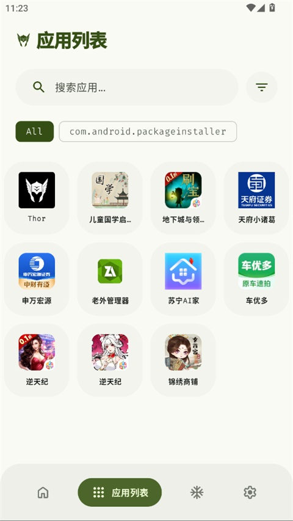

把 Thor 嵌进我的周循环——一台安卓机当两台用的完整工作流
我每周要把同一台安卓机在工作和生活两种状态间切换三次：工作日冻结所有娱乐应用，周末一键恢复。以前靠 Tasker 加 ADB 脚本要维护六七段触发器，现在用 Thor 串起 Shizuku、日历和微信自动化，一条链搞定。
开头：我需要每周把同一台手机切换三次
我的主力安卓机上装了差不多 180 个应用，其中一半是工作类（飞书、企业微信、Git 客户端、SSH 工具），另一半是生活类（微信、抖音、B站、外卖、银行）。以前这两类混在一起的时候，每次写文档写一半弹个抖音通知，或者周末想刷视频的时候飞书还在后台收消息，两头都不干净。
最早的解决方案是 Tasker 写脚本：每周一早上 8 点执行 40 条 pm disable-user，周五下班执行 pm enable 解冻。跑了三个月，脚本里硬编码的包名攒了满满两屏，每次手机系统更新或某个应用改了包名就漏冻；Tasker 的 profile 触发经常因为电池优化被系统杀掉，以为冻了其实没冻。
后来换过 IceBox（冰箱），UI 漂亮但批量操作慢，解冻一个组要等 20 秒以上；也试过 App Manager，功能太多像个瑞士军刀，我只想要一个冻结工具却要翻三级菜单。直到朋友推给我 Thor官网，从官方下载拿到安装包之后我才真正把这件事做成了一条不需要维护的固定流程。
旧流程卡在哪
先说清楚我之前那条链的断点，Thor 就是专门补这些的：
- 包名硬编码：Tasker 脚本里写死 40 个包名，删一个应用或换一个版本就得手动改脚本。
- 触发器不稳定：Tasker 的时间 profile 被 MIUI 的后台限制偶尔跳过，周一早上起来发现娱乐应用还在跑。
- 解冻慢：IceBox 和 App Manager 批量解冻一个组要逐进程恢复，40 个应用经常卡 30 秒以上。
- 状态不透明：不知道当前到底冻了多少，有没有漏网的，心里没数。
这四个问题我用 Thor 串了一条新链之后，全部消失。
新流程：Thor 插在哪
完整的链是这样的：
日历事件（每周一 08:00 / 每周五 18:00）
↓ 触发 Tasker（只当触发器，不再自己执行命令）
↓
Thor（批量冻结 / 批量解冻）
↓
飞书机器人推送结果（"本周已冻结 42 个应用"）
↓
Done——整个流程跑完我继续上班/下班核心变化是 Thor 从"被脚本调用的工具"变成了"流程的中心"：
- Tasker 只当触发器：不再写任何
pm命令，只负责监听日历事件然后发一个 intent 给 Thor。这样即使 Tasker 被杀，Thor 自己的定时任务也能兜底。 - Thor 维护冻结列表：这是最大的变化。我不再在脚本里写包名——Thor 的应用列表里直接搜索筛选，勾选娱乐类应用，批量冻结。下次要增删应用，直接在 Thor 里改勾选，不用动任何脚本。
- Shizuku 模式替代 Root：我的手机没 Root，Shizuku 通过无线调试给 Thor shell 权限，冻结和
pm命令效果完全一样。关键是 Shizuku 重启后只要无线调试还开着，Thor 能自动恢复连接——以前 Tasker 脚本依赖 ADB 连接，每次重启都要手动重连。 - 结果通知：Thor 批量操作完成后，Tasker 读取 Thor 的操作日志（Thor 本身不联网也不需要联网，日志是本地可访问的），然后用 HTTP 请求推给飞书机器人。这样我不需要打开 Thor 就能看到这周冻了几个。
实操细节：最容易断链的两个环节
这条链跑了大概两个月，有两个环节是最开始不稳定、后来找着窍门的。
环节一：Shizuku 重启后的自动恢复
Android 安全机制决定了每次重启后 ADB 连接会断开，Shizuku 守护进程也就跟着停了。最开始我每周一早上起来先手动开 Shizuku 再点 Thor，两步操作不算多但每次都忘。
现在的做法是：
- 开发者选项里永久开启无线调试（部分 ROM 重启后会自动关，小米 HyperOS 是每次开机自动开，华为 HarmonyOS 需要进开发者选项手动勾「允许无线调试自动启动」）。
- Tasker 加一个开机后 1 分钟的 profile，自动打开 Shizuku App 并触发「重新连接」。Thor 的设置里有「自动恢复 Shizuku 连接」的开关，开了之后不用额外动作——更详细的 Shizuku 配对参数说明可以翻 Thor文档。
- 如果还是连不上，Thor 的设置页能看到 Shizuku 状态——显示未连接的时候直接在 Thor 里点一下「连接 Shizuku」就行，比回到 Shizuku App 操作快。
一个小坑：华为和荣耀的 ROM 无线调试入口被隐藏了，找不到的话就用 USB 数据线插一下手机电脑，adb pair 配对一次之后就能稳定用无线。旧款小米 MIUI 12 及更早也是同样的情况。
环节二：冻结列表的维护
应用列表在变：上个月把某个 B 站第三方客户端卸了，这周装了个新的外卖 App 需要加入生活组。以前改包名列表要翻脚本，现在 Thor 的应用列表页直接解决：
- 搜索 + 筛选：Thor 主页的应用分布图表能按安装来源分组，一眼就能看出哪些是 Play 商店装的、哪些是手动装的。
- 长按进入多选：应用卡片长按之后顶部出现选中数量和批量操作按钮，我直接把要冻的应用勾进去。
- 冻结标签页分组：冻完之后切换到冻结标签页，状态过滤器选 Frozen，就能看到所有被冻的应用。如果某个应用冻了之后还耗电（极个别厂商 ROM 会尝试"修复"被冻的应用），在这里再点一下冻结按钮就行。
批量冻结 40 个应用 Thor 只需要 3-5 秒，和单个操作一样快——因为底层走的是 Package Manager 原生 API，不管你批量还是单个，命令都是一次性发出去的。以前 IceBox 逐应用解冻要等 30 秒的情况不会再出现了。


效果与边界
这条链到现在跑了 10 个周循环，算下来：
- 少了两次手动操作：以前周一早上手动开 Tasker profile、周五下班手动跑解冻脚本，现在完全自动。
- 零脚本维护：Tasker 的 profile 只留了 3 行触发逻辑，包名列表全在 Thor 里维护，改应用只改 Thor 的勾选。
- 状态透明：Thor 主页的活跃应用数卡片直接告诉我当前还有多少活跃应用，冻完之后数字一下掉下来，清清楚楚。
但也有明显的边界，这套流程不是万能的：
- 不能清理缓存：Thor 刻意不做缓存清理功能——清理缓存需要更复杂的权限，而且效果有限，真正想腾空间还是得逐个应用去系统设置里删。Thor 只做应用管理，这点要认清楚。
- 动态色彩依赖系统：Android 12+ 才有的 Material You 动态色彩，Thor 有开关但前提是系统本身开着。我朋友用的一台 Android 10 的旧手机，Thor 界面就是固定配色。
- 冻结系统应用有风险：不能冻 Launcher（桌面）、SystemUI（状态栏）、Telephony（拨号）这些核心组件——冻了桌面直接消失，只能用 ADB 手动
pm enable恢复。我第一次用 Thor 冻应用的时候误冻了桌面，USB 连电脑敲了半天命令才救回来，现在每次批量冻结前都先搜一遍有没有 Launcher 或 SystemUI 的包名在列表里。 - 不读应用内部数据：Thor 只能读 Package Manager 的元数据，不能读聊天记录、不能看应用内部文件。这点我反而觉得好——冻应用就是冻应用，别越界读隐私数据。
Thor 的定位就是轻量、干净、开源的应用管理器。它不抢 Tasker 的触发器位置，不抢 IceBox 的界面颜值，就把冻结这件事做到极致。我现在每周只需要花 5 分钟在 Thor 里调整一次冻结列表，剩下的时间它自己跑。这套流程跑通之后，我甚至忘了还有手动切工作/生活模式这回事。
Thor 的完整文档和配置示例我都同步到了 GitHub、Gitee 和 GitCode 三个仓库里，GitHub主仓库是主版本，Gitee镜像和GitCode备份对国内网络访问更友好。